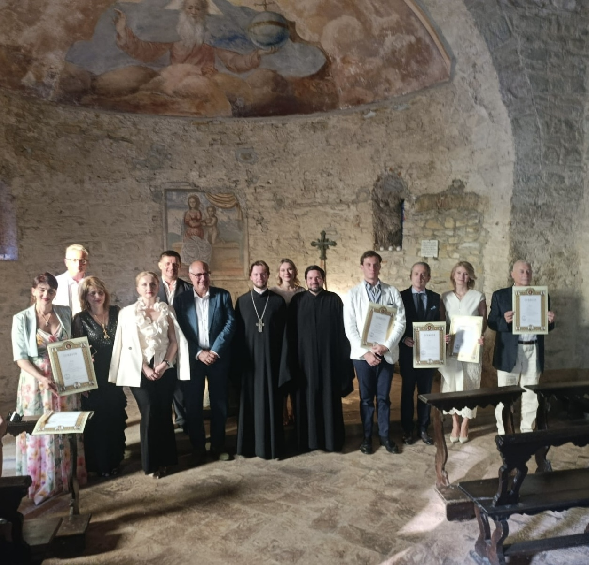
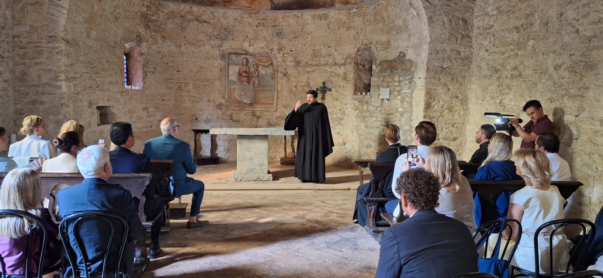
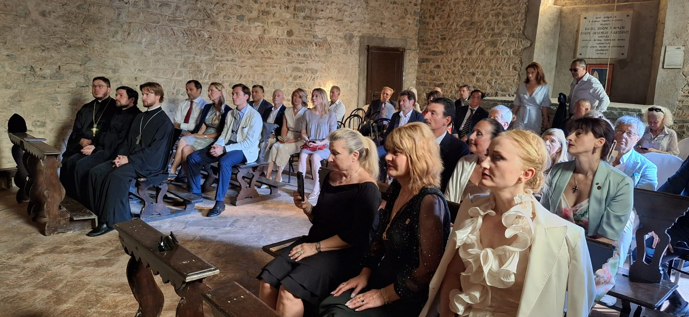
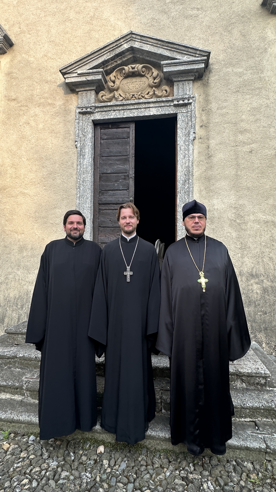
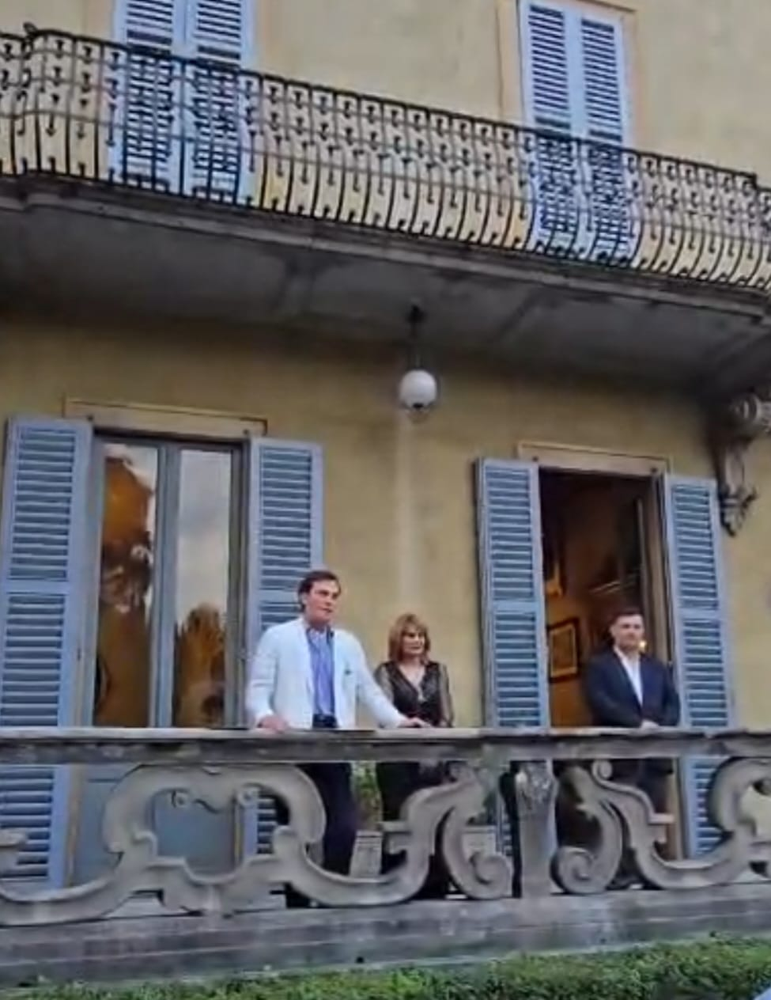
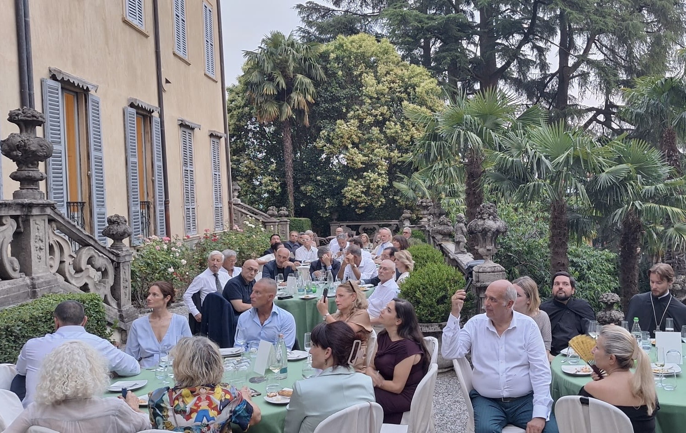
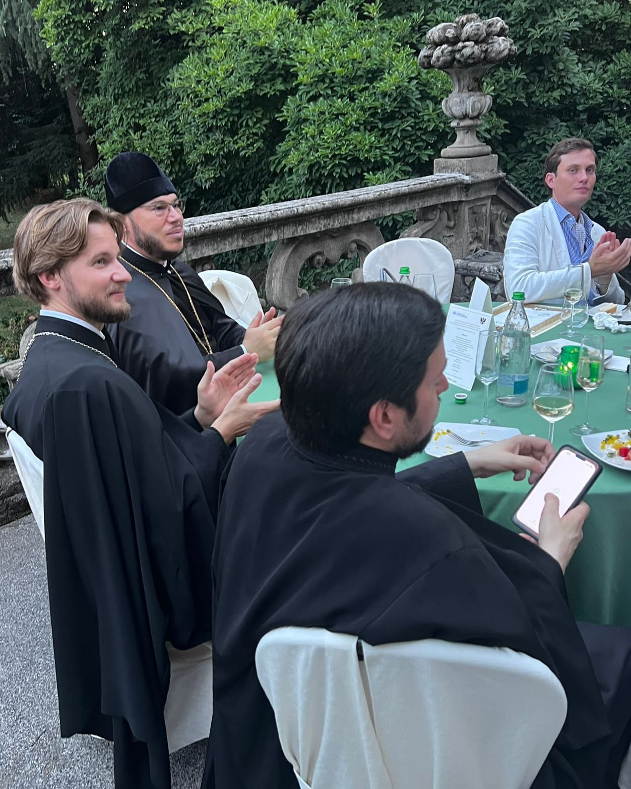

Galleria
Galleria
Immagini degli eventi del Circolo e delle associazioni collegate. Ogni foto e accompagnata da una breve didascalia.









26 giugno 2026
Cerimonia a Villa Sormani Marzorati Uva di Missaglia
Il 26 giugno 2026, in occasione della speciale visita dello Ieromonaco Ambrogio Matsegora, Vicario generale della Chiesa Ortodossa Russa del Patriarcato di Mosca in Italia, presso villa Sormani Marzorati Uva di Missaglia, in Brianza, si è svolta una cerimonia nel corso della quale la Metropolia dell'Europa Occidentale ha conferito attestati di benemerenza ad un gruppo di personalità italiane e straniere, cattoliche e ortodosse, per meriti culturali e sociali, fra cui alcuni Soci e Simpatizzanti del nostro Circolo. Altre benemerenze sono state consegnate ai nostri Soci dalla Principessa Silvia Andronik Cantacuzino, Ospite d'Onore della serata. La cerimonia era organizzata dalla Confraternita Cavalleresca Imperiale Russa Ortodossa di San Giovanni di Gerusalemme e di Malta, con l'attiva partecipazione del nostro Circolo.
Lo Ieromonaco padre Ambrogio era accompagnato dal Segretario padre Adriano, Priore della confraternita organizzatrice, e da padre Vasilj, Parroco della comunità ortodossa russa di Saronno. Erano presenti circa un centinaio di persone, fra cui autorità civili, militari e diplomatiche.
La cerimonia è stata seguita da una visita guidata alla stupenda villa Sormani Marzorati Uva di Missaglia, edificio di origini risalenti all'epoca romana ed oggetto di successive trasformazioni nel corso dei secoli. Il conte Alberto Uva ne è l'attuale proprietario e promotore di iniziative culturali legate alla storia del territorio brianzolo.
Rassegna stampa
- ticinolive.chLa Metropolia ortodossa russa premia i benemeriti della cultura e della solidarietà
- notiziarioaraldico.infoGiovanniti ortodossi: cerimonia di benemerenza a Missaglia
- mondooggi.comRussia, Italia, fede
- ilgraffio.netIl ritorno dell'aristocrazia europea in una villa segreta, tra simboli e tradizioni
- cavalierenews.itIl ritorno dell'aristocrazia europea in una villa segreta alle porte di Milano, tra simboli e tradizione
- YouTubeVideo della cerimonia